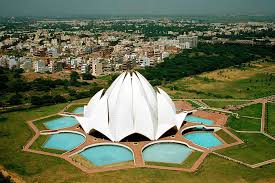

Delhi tour
Akshardham Temple
Swaminarayan Akshardham in New Delhi epitomizes 10,000 years of Indian culture in all its breathtaking grandeur, beauty, wisdom an d bliss. It brilliantly showcases the essence of India’s ancient architecture, traditions and timeless spiritual messages. The Akshardham experience is an enlightening journey through India’s glorious art, values and contributions for the progress, happiness and harmony of mankind.

|

|
Akshardham1 | Akshardham1 Architech | Swaminarayan Akshardham |
The Swaminarayan Akshardham complex was built in only five years through the blessings of HDH Pramukh Swami Maharaj of the Bochasanwasi Shri Akshar Purushottam Swaminarayan Sanstha (BAPS) and the colossal devotional efforts of 11,000 artisans and thousands of BAPS volunteers. Heralded by the Guinness World Record as the World’s Largest Comprehensive Hindu Temple, the complex was inaugurated on 6 November, 2005.
Lotus Temple
East of Nehru place, this temple is built in the shape of a lotus flower and is the last of seven Major Bahai's temples built around the world. Completed in1986 it is set among the lush green landscaped gardens.

|
 | |
| Historical of Lotus | Historical Facts | White lotus |
The structure is made up of pure white marble The architect Furiburz Sabha chose the lotus as the symbol common to Hinduism, Buddhism, Bhai TempleJainism and Islam. Adherents of any faith are free to visit the temple and pray or meditate. Around the blooming petals there are nine pools of water, which light up, in natural light. It looks spectacular at dusk when it is flood lit.
Birla Mandir
Laxmi Narayan Temple, also known as Birla Mandir, is one of Delhi's major temples and a major tourist attraction. Built by the industrialst Sh. J.K. Birla in 1939, this beautiful temple is located in the west of Connaught Place.

|

|

|
| Birla Mandir yellow color1 | Birla Mandir night visition2 | Birla Mandir day visition3 |
The temple is dedicated to Laxmi (the goddess of prosperity) and Narayana (The preserver). The temple was inaugurated by Mahatma Gandhi on the condition that people of all castes will be allowed to enter the temple.
India gate
At the centre of New Delhi stands the 42 m high India Gate, an "Arc-de-Triomphe" like archway in the middle of a crossroad. Almost similar to its French counterpart, it commemorates the 70,000 Indian soldiers who lost their lives fighting for the British Army during the World War I. The memorial bears the names of more than 13,516 British and Indian soldiers killed in the Northwestern Frontier in the Afghan war of 1919.

|

|

|
| Morning | 15 August | Night |
The foundation stone of India Gate was laid by His Royal Highness, the Duke of Connaught in 1921 and it was designed by Edwin Lutyens. The monument was dedicated to the nation 10 years later by the then Viceroy, Lord Irwin. Another memorial, Amar Jawan Jyoti was added much later, after India got its independence. The eternal flame burns day and night under the arch to remind the nation of soldiers who laid down their lives in the Indo-Pakistan War of December 1971.
Garden of Five Senses
The Garden of Five Senses is not just a park, it is a space with a variety of activities, inviting public interaction and exploration. The project, developed by Delhi Tourism Transportation Development Corporation, was conceptualized to answer to the city's need for leisure space for the public, for people to socialize and unwind. Such spaces add atmosphere and life to a city and cater to all sections of the society.
The twenty-acre site, located at Said-Ul-Azaib village, close to the Mehrauli heritage area in New Delhi, is spectacular. The Garden was inaugurated in February 2003. Majestic rocks stand silhouetted against the sky, others lie strewn upon the ground in a casual yet alluring display of nature's sculptural genius. It was the ideal ground on which to realize the concept of a public leisure space that would awaken a sensory response and thereby a sensitivity to the environment.
Iskcon Temple
Iskcon, East of Kailash has developed Vedic Expo , Asias only technology center promoting Vedic Sciences and culturewherein a very high technology usage of Audio ,visual presentation of Bhagvat Gita is depicted with lights and sound used for creating historical effect and a very interesting tourist attraction as we are the only one in Delhi showcasing this.
We have another show on Mahabharata and also a complete robotics show . The whole ambience of the temple is very attractive with ongoing devotional chants, fountains and gift shops. We have a Govinda’s restaurant serving high quality vegetarian food and has become land mark for foodies in Delhi.
kalam memorial
A BRILLIANT PERSONALITY INSPIRING MILLIONS WITH HIS ACCOMPLISHMENTS Born on October 15, 1931 in village of Dhanushkodi, Rameshwaram, Tamil Nadu, Dr. Kalam will remain one of the finest human beings to have ever lived. He had an illustrious and successful life, and as he said, If you want to shine like a sun, then first burn like a sun.

|

|

|
| Birla Mandir yellow color1 | Birla Mandir night visition2 | Birla Mandir day visition3 |
Some of his achievements are as under: India became a major military power after the successes of Agni and Prithvi under his leadership. Developed a low cost Coronary stent. It was named as "Kalam-Raju Stent". In 2012, designed a rugged tablet PC for health care in rural areas, which was named as "Kalam-Raju Tablet". In 1998, the Pokhran-II tests cemented Indias nuclear prowess. Dr. Kalam played the pivotal role in the project. He wrote 34 books which envisioned his dream of India as a superpower, with Indians as innovative and unique in their thinking. Some of his achievements are as under: India became a major military power after the successes of Agni and Prithvi under his leadership. Developed a low cost Coronary stent. It was named as "Kalam-Raju Stent". In 2012, designed a rugged tablet PC for health care in rural areas, which was named as "Kalam-Raju Tablet". In 1998, the Pokhran-II tests cemented Indias nuclear prowess. Dr. Kalam played the pivotal role in the project. He wrote 34 books which envisioned his dream of India as a superpower, with Indians as innovative and unique in their thinking.
Qutab minar
Qutab Minar is a soaring, 73 m-high tower of victory, built in 1193 by Qutab-ud-din Aibak immediately after the defeat of Delhi's last Hindu kingdom. The tower has five distinct storeys, each marked by a projecting balcony and tapers from a 15 m diameter at the base to just 2.5 m at the top. The first three storeys are made of red sandstone; the fourth and fifth storeys are of marble and sandstone. At the foot of the tower is the Quwwat-ul-Islam Mosque

|

|

|
| Qutab minar1 | Qutab minar12 | Qutab minar13 |
the first mosque to be built in India. An inscription over its eastern gate provocatively informs that it was built with material obtained from demolishing '27 Hindu temples'. A 7 m-high iron pillar stands in the courtyard of the mosque. It is said that if you can encircle it with your hands while standing with your back to it your wish will be fulfilled.